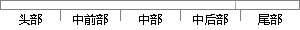

灰度值的平均值作为 中心点处 的灰度值，
片段位置图

相似结果
相似片段：
进行滤波是图像更加的平滑与模糊，通过平滑模糊图像牺牲图像纹理信息的方法来达到去噪的目的，比较常用的有：领域平均法，其算法取掩模内像素灰度值的平均值作为中心像素点的灰度值；空间域低通滤波发，其算法是通过一个低通卷积模版在空间域进行图像卷积运算，达到图像去噪的目的；中值滤波法一种非线性空间域滤波算法，
| 对比库： | WriteCheck云资源库 |
| 来源： | blog.sciencenet.cn 查看来源 |
| 发布时间： | 2015-07-06 |
| 相似率 | 75% （轻度抄袭） |